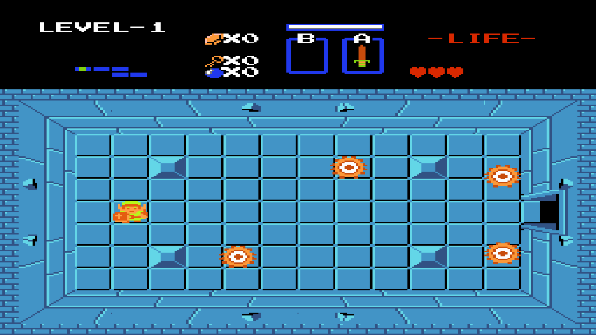

EECS 494 · Project 1 · Team project
The Legend of Zelda Remake + Armor Lock

In game, press 4 to jump to the custom level. Shift is Armor Lock.
About
A recreation of the first dungeon of the original Legend of Zelda (NES) in Unity: grid-locked movement, the dungeon's enemies and boss, items, keys and locked doors, and the NES heads-up display. After the classic dungeon comes a custom level built around a new mechanic, Armor Lock.
Armor Lock. Hold Shift and Link plants his fist and raises a bubble shield. While it's up nothing can hurt him, fireballs bounce back at whoever threw them, and rolling Digdoggers blow up against it. It only lasts a few seconds and has to recharge, so choosing when to lock is the level's central decision.
What I built
- Link's grid-locked movement and collision tuning, and the weapon framework: sword, bow, bombs, and the boomerang's stun.
- Enemy systems: knockback and stun, NES drop tables and death sparkles, the Stalfos and the Aquamentus boss, and, with my teammate James, the Wallmaster and blade traps.
- The NES-style HUD and minimap and the water tiles, and, with James, the keys, locked doors, and room transitions.
- Armor Lock: the bubble shield that pushes enemies and reflects fireballs, its shimmer effect, a charge bar with cooldown, and layered sounds.
- The custom level: a shielded Aquamentus whose bubble only a reflected fireball can pop, and Digdoggers that roll wall to wall and explode against the shield.
- A refactor around shared base classes, so weapons and enemies reuse the same health, damage, and movement code.